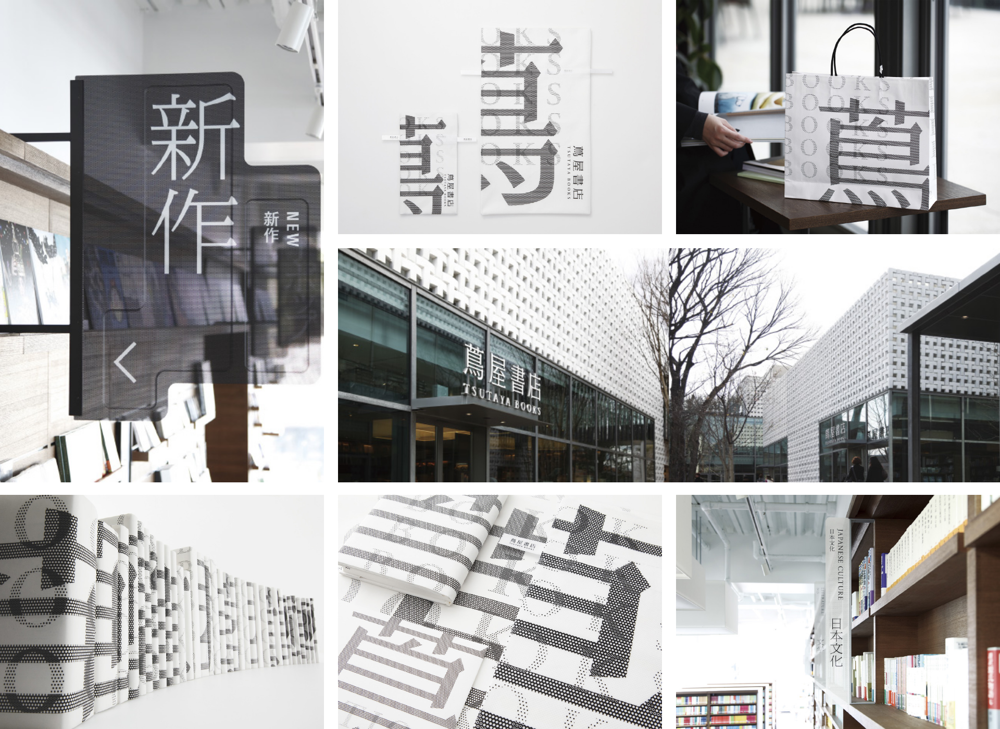

1983년 문 연 츠타야 서점은 책, 음악, 영화 등 라이프스타일을 다루는 공간으로 유명합니다. 2011년 다이칸야마에 새로운 공간을 오픈하면서 기존과는 다른 새로운 디자인을 의뢰하게
되었고, 하라켄야는 츠타야서점의 로고를 영어에서 한자로 바꾸는 한편 ‘점dot‘을 이용해 전반적인 디자인 비주얼 아이덴티티를 구축했습니다.
츠타야 서점을 방문한 사람은 하나같이 그곳을 서점이라는 말만 가지고는 표현할 수 없다고 말합니다. 츠타야는 분명 서점이지만, 서점 그 이상의 설명할 수 없는 특별함을 가진 공간입니다.
츠타야가 특별한 이유는 공간 디자인 때문입니다. 츠타야에는 서적코너뿐만 아니라 카페, 음반코너 등 다양한 공간이 있는데, 그 중 음반 코너에서는 1~2인용 청음 테이블을 배치해 주변
환경에 방해받지 않고 음악을 감상할 수 있도록 했습니다.
또 카페 역시 낮고 넓은 소파를 배치해 여유를 느낄 수 있게 하였고, 특히 조명은 간접조명의 비중을 높이고 조도를 낮게 해 고객의 피로도를 낮추고, 일부 유리 벽은 자연 채광을 그대로
살려 계절과 시간의 감각을 온전히 느낄 수 있도록 함으로 츠타야 서점에 가는 것은 책을 사러 가는 것이 아니라, 서점 공간 자체를 경험하러 가는 공간을 사용할 사람들의 행동과 활동을
고려해, 그 목적에 맞는 공간을 디자인한 것입니다.
츠타야서점의 로고와 공간 및 사이니지 디자인 | 제공: 일본디자인센터
